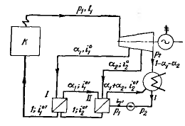
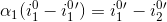
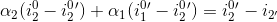

Бу турбинасына параметрлері p1 = кГ/см2 және t1 = 540℃ тең бу келіп түседі.
Турбинаның екі регенеративті алымы бар. Алымдардың қысымы p10 = 5 кг/см2 және p20 = 1.2 кг/см2 . Конденсатордығы қысым p10 = 0.04 кг/см2 тең. 1 МДж және 1 кВт*сағ өндірілген энергия үшін будың меншікті шығыны және регенеративті циклдын термиялық ПӘК-тін анықтаңыз. Содан соң бұл көрсеткіштерді регенерациясыз цикл көрсеткішімен салыстырыңыз. Регенеративті қыздыруды енгізуден болатын үнемділік мөлшерін есептеңіз.
Жоғарыда көрсетілген суретке сәйкес is- диаграммасы мен кестеге сәйкес энтальпияларды табамыз:
i1 = 833; i 2 = 488; i 10 = 653; i 20 = 594; i 10' = 104; i 20'= 104; және i2'= 29 ккал/кг; α 1 және α2 алымдарының мәнің табу үшін қыздырғыштардың балансын құрамыз. Бірінші қыздырғыштың балансы мынаған тең:
Екінші қыздырғыштың балансы:
*Жауаптар ондықтарға дейін жуықталады (Мысал: 2.9)